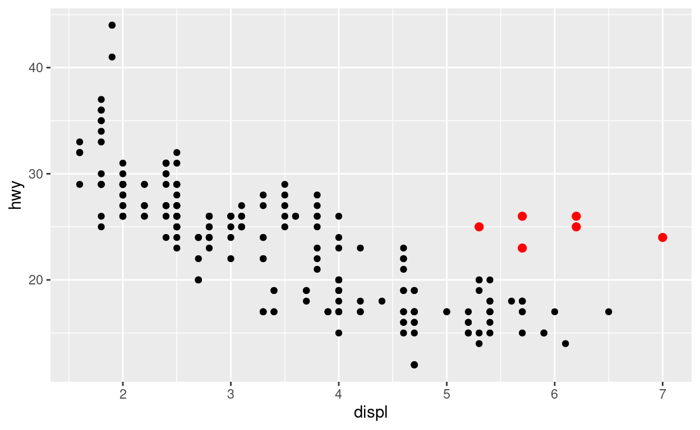
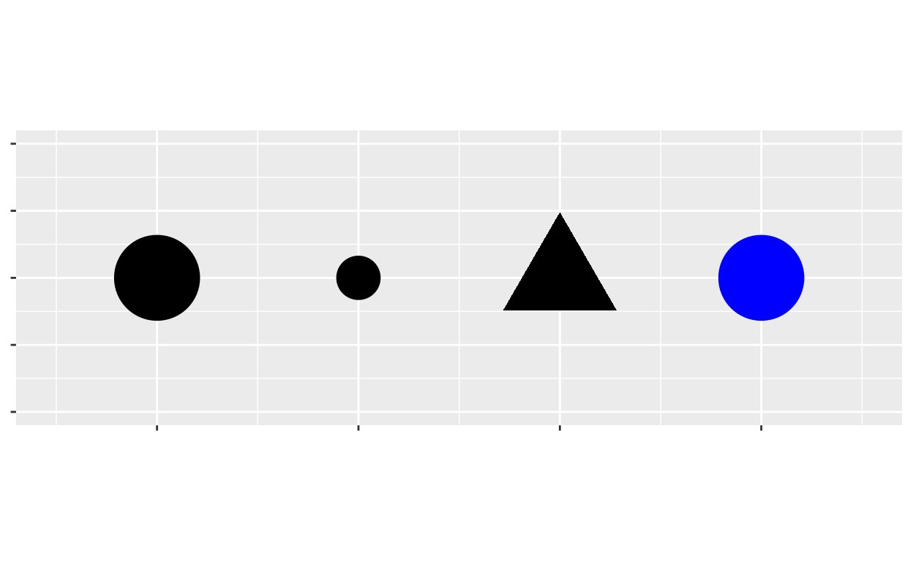
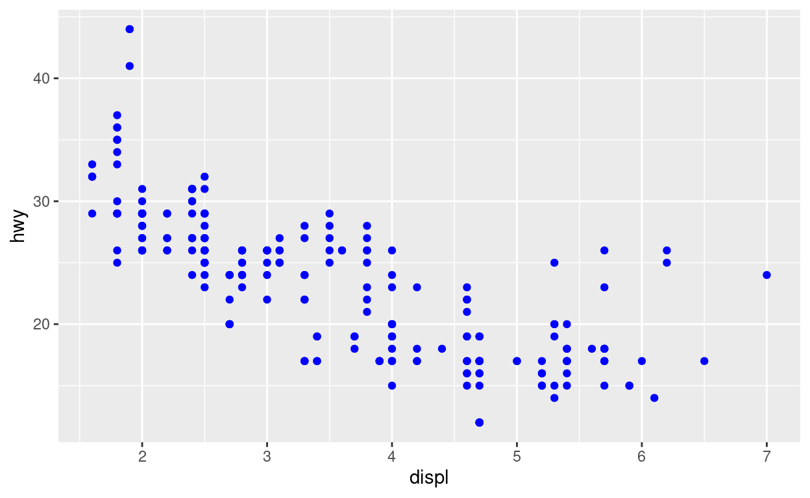
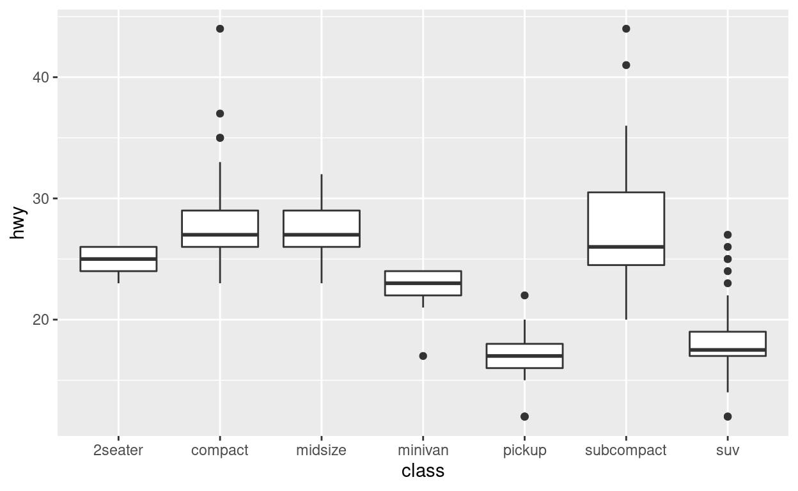
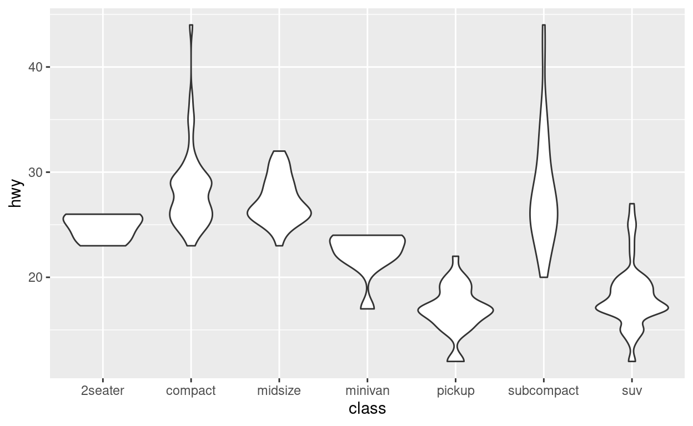

La visualisation des données est l’un des outils les plus importants pour la Data Science. C’est aussi un très bon moyen pour commencer à apprendre R : l’aspect concret de la visualisation de données peut garder motivé lorsqu’on traverse des périodes de découragement à l’apprentissage d’un nouveau langage.
Dans ce module, vous allez apprendre à visualiser des données avec {ggplot2}, qui est probablement le package de visualisation de données le plus populaire en R. Ce module vous permettra d’acquérir trois compétences essentielles :
Créer des graphiques avec un modèle (ou template) {ggplot2} réutilisable
Ajouter des variables à un graphique avec aesthetics
Sélectionner le “type” de votre graphique avec geoms
Ces trois compétences vont rapidement vous permettre d’ajouter la visualisation à votre boîte à outils de Data Scientist. Par la suite, vous pourrez en savoir plus et augmenter encore vos compétences avec le module Visualiser des données.
Ces exemples sont issus du livre R for Data Science d’Hadley Wickham et Garrett Grolemund, publié par O’Reilly Media, Inc., 2016, ISBN: 9781491910399. Vous pouvez vous procurer le livre ici : shop.oreilly.com.
Ce module utilise le packages qui composent le coeur du tidyverse, notamment {ggplot2}. Ce package a déjà été installé au préalable.
“The simple graph has brought more information to the data analyst’s mind than any other device.” - ” Le graphique apporte plus d’informations à l’esprit du Data Analyst que tout autre outil.” — John Tukey
Commençons ce module avec une question à explorer.
mpgVous pouvez tester votre hypothèse avec le jeu de données mpg qui s’installe en même temps que {ggplot2}. mpg contient des observations de 38 modèles de voitures par l’Agence de protection environnementale des Etats-Unis. Voici quelques-unes des variables de mpg :
displ, la taille du moteur de la voiture, en litres.hwy, le rendement énergétique sur l’autoroute, en miles par gallon (1 mpg = 0.425144 km/L)Lorsqu’elles effectuent la même distance, une voiture avec un faible rendement énergétique consomme plus de carburant qu’une voiture avec un important rendement énergétique.
Pour visualiser le jeu de données mpg, tapez mpg dans le bloc de code ci-dessous et cliquez sur “Exécuter”.
mpgLe code ci-dessous utilise des fonctions du package {ggplot2} pour tracer la relation entre displ et hwy.
Regardons d’abord le graphique et examinons ensuite le code en lui-même. Pour voir le graphique, cliquez sur “Executer” (cela permet de lancer le code ci-dessous).
ggplot(data = mpg) +
aes(x = displ, y = hwy) +
geom_point()Le graphique montre une relation négative entre la taille du moteur (displ) et le rendement énergétique (hwy). Les points ayant une valeur importante de displ ont une faible valeur de hwy, et vice versa.
Autrement dit, les voitures avec de gros moteurs utilisent plus de carburant. Si c’était votre hypothèse, elle était correcte !
Regardons à présent le graphique que nous avons réalisé.
ggplot()Ci-dessous se trouve le code utilisé pour construire le graphique. Notez qu’il contient trois fonctions : ggplot(), aes(), et geom_point().
ggplot(data = mpg) +
aes(x = displ, y = hwy) +
geom_point()La première fonction, ggplot(), crée un système de coordonnées auquel vous pouvez ajouter des couches. Le premier argument de ggplot() est le jeu de données utilisé dans le graphique.
En soi, ggplot(data = mpg) crée un graphique vide, ce qui n’est pas très intéressant (donc on ne vous le montre pas !).
aes()ggplot(data = mpg) +
aes(x = displ, y = hwy) +
geom_point()aes est utilisé pour regrouper toutes les représentations visuelles que vous voulez créer. C’est dans la fonction aes que l’on définit les variables du jeu de données à représenter sur les différents axes du graphique.
Ici, nous voulons représenter la variable displ sur l’axe des abscisses (x) et la variable hwy sur l’axe des ordonnées (y). C’est pourquoi on ajoute x = displ et y = hwy dans aes() (séparés par une virgule). Où {ggplot2} va-t-il chercher ces variables à représenter ? Dans le jeu de données que l’on a indiqué dans l’argument data, dans ce cas, mpg.
geom_point()ggplot(data = mpg) +
aes(x = displ, y = hwy) +
geom_point()geom_point() ajoute une couche de points au graphique vide crée par ggplot() + aes(). En conséquence, cela permet d’obtenir un nuage de points.
Notre code suit le processus classique pour créer un graphique avec {ggplot2}. Pour faire un graphique, il faut :
Commencer par ggplot()
Sélectionner les variables avec la fonction aes()
Ajouter des éléments au graphique avec la fonction geom_
Vous pouvez transformer votre code en modèle réutilisable pour créer des graphiques. Pour faire votre graphique, remplacez les sections entre chevrons dans le code avec un jeu de données, une collection de représentations, ou une fonction geom_.
Essayez ! Remplacez les sections entre chevrons avec les données mpg, class pour l’axe x, hwy pour l’axe y, et geom_boxplot pour faire un graphique légèrement différent. Assurez-vous d’effacer les symboles # de commentaire avant de lancer le code.
# ggplot(data = <DATA>) +
# aes(x = <X>, y = <Y>)
# <GEOM_FUNCTION>()ggplot(data = mpg) +
aes(x = class, y = hwy) +
geom_boxplot()Lorsque vous allez commencer à lancer du code, vous allez surement rencontrer des problèmes. Mais ne vous inquiétez pas —cela arrive à tout le monde, même les plus expérimentés. Les programmeurs qui codent depuis des années écrivent tous les jours du code qui ne fonctionne pas du premier coup.
Commencez par comparer minutieusement le code que vous lancez et le code des exemples. R est extrêmement pointilleux, et une faute de frappe peut faire toute la différence… Assurez-vous que chaque parenthèse ouvrante ( est associée à une parenthèse femante ), ou que chaque guillemet " est associé à un autre ". Faites également attention à la distinction majuscule/minuscule : R est sensible à la casse.
Un problème commun lors de la création d’un graphique avec {ggplot2} est la position du + au mauvais endroit : il doit être situé à la fin de la ligne. En effet, R exécute le code ligne par ligne : le + en fin de ligne indique que la ligne qui suit doit être prise en compte avant la création du graphique.
Si vous êtes bloqué, essayez l’aide de R. Vous pouvez trouver de l’aide sur n’importe quelle fonction en lançant un point d’interrogation devant la fonction (par exemple ?geom_point). Notez que la partie la plus souvent utilisée est tout en bas de la page : les codes d’exemples. Regardez si un exemple ressemble à ce que vous cherchez à faire.
Si cela ne vous aide pas, lisez minutieusement le message d’erreur qui apparaît lorsque vous lancez votre code qui ne fonctionne pas. Vous pouvez coller ce message d’erreur dans google, car il est fort probable que vous ne soyez pas le premier à avoir eu cette erreur.
Lancez ggplot(data = mpg). Qu’observez-vous ?
Faites un nuage de points de cty vs hwy.
"Les nuages de points utilisent le geom point."Que se passe-t-il si vous faites un nuage de points avec class vs drv. Essayez pour voir. Ce graphique vous semble-t-il utile ?
“The greatest value of a picture is when it forces us to notice what we never expected to see.” - “Une image devient pertinente lorsqu’elle nous oblige à remarquer ce que nous ne nous attendions pas à voir.” — John Tukey
Dans le graphique ci-dessous, un groupe de points (en rouge) semble s’écarter de la tendance linéaire qui lie la taille du moteur et la consommation d’essence. Ces voitures ont une consommation d’essence plus élevée qu’attendu. Comment pouvez-vous expliquer ces observations ?

Émettons l’hypothèse que ces voitures sont hybrides. Un moyen de tester cette hypothèse est de regarder la valeur de class pour chaque voiture. La variable class du jeu de données mpg classifie les voitures en groupes comme : compact, midsize, ou SUV. Si les points rouges représentent les voitures hybrides, ils devraient être classifiés en compact ou, éventuellement, subcompact (notez que ces données ont été collectées avant que les voitures hybrides ne deviennent populaires). Pour vérifier cette hypothèse, nous avons besoin d’ajouter la variable class au graphique.
Vous pouvez ajouter une troisième variable, comme class à un nuage de point en deux dimensions en la représentant dans un nouveau aesthetic (paramètre esthétique de projection) dans la fonction aes. Les arguments d’aes sont des propriétés visuelles des objets dans un graphique. Ces propriétés visuelles incluent entre autres la taille, la forme, et la couleur des points.
Vous pouvez afficher un point de différentes façons en changeant ses propriétés dans la fonction aes. On utilisera le mot ‘niveau’ pour décrire les valeurs des paramètres de la fonction aes (le mot ‘valeur’ sera réservé aux valeurs de données). Ici, on change le niveau de taille, forme, et couleur de points pour faire un point petit, triangulaire, et bleu :

On peut ajouter l’information de la variable class au graphique en appliquant les niveaux d’un paramètre d’aes (comme la couleur) aux modalités de la variable class. Par exemple, on peut colorer les points en vert s’ils appartiennent à la classe ‘compact’, bleu s’ils appartiennent à la classe ‘midsize’, et ainsi de suite.
A vous de jouer ! Enlevez les # et remplacez les parties manquantes dans le code ci-dessous par color = class. Que se passe-t-il? (notez que vous pouvez utiliser colour ou color.)
# ggplot(data = mpg) +
# aes(x = displ, y = hwy, ____________) +
# geom_point()Indice: Assurez-vous de supprimer tous les ’_’ et ‘#’ du code
ggplot(data = mpg) +
aes(x = displ, y = hwy, color = class) +
geom_point()Les couleurs révèlent qu’une grande partie des points qui semblent éloignés des autres sont des voitures à deux places (2seater). Ces voitures ne sont pas hybrides, ce sont en fait des voitures de sport ! Les voitures de sport ont de gros moteurs comme les camionnettes, mais de petites carrosseries comme les petites voitures (ce qui réduit leur consommation). Rétrospectivement, il était en fait peu probable que ces voitures aient été des voitures hybrides puisque elles ont de gros moteurs.
Ce n’est pas la seule chose que nous avons appris, vous avez aussi appris à ajouter de nouveaux paramètres esthétiques à vos graphiques. Revoyons le processus en entier.
Pour représenter une troisième variable par une forme ou une couleur, il faut indiquer le nom de la variable concernée dans le paramètre de la fonction aes. {ggplot2} va automatiquement assigner un niveau du paramètre esthétique (ici, une couleur) à chaque modalité de la variable. {ggplot2} va aussi ajouter une légende qui explique quel niveau correspond à quelle modalité.
Ainsi, en plus de définir la localisation de chaque points (x et y), la fonction aes permet de définir de nombreuses propriétés visuelles de ces points.
Dans l’exemple précédent, nous avons représenté la variable class par des couleurs, mais nous aurions pu utiliser la taille (size) pour la représenter.
Changez le code ci-dessous pour représenter class par des points de différentes tailles (size). Que se passe-t-il?
ggplot(data = mpg) +
aes(x = displ, y = hwy, color = class) +
geom_point()Indice: Si color change la couleur, quel paramètre change la taille ?
ggplot(data = mpg) +
aes(x = displ, y = hwy, size = class) +
geom_point()Vous pouvez aussi représenter class grâce à l’argument alpha qui contrôle la transparence des points. Essayez en dessous.
ggplot(data = mpg) +
aes(x = displ, y = hwy) +
geom_point()Indice: Si color change la couleur, quel paramètre permet de changer alpha ?
ggplot(data = mpg) +
aes(x = displ, y = hwy, alpha = class) +
geom_point()Essayons une dernière façon de visualiser les données grâce à un paramètre d’aes. Cette fois-ci, utilisez shape pour représenter la variable class. Regardez ensuite la classe SUV, que se passe-t-il?
ggplot(data = mpg) +
aes(x = displ, y = hwy) +
geom_point()Indice: Si color change la couleur, quel paramètre change la forme (shape en anglais) ?
ggplot(data = mpg) +
aes(x = displ, y = hwy, shape = class) +
geom_point()Dans le code ci-dessous, représentez cty, qui est une variable continue, avec color, size, et shape. Comment se comportent ces différentes représentations pour une variable continue comme cty par rapport à une variable catégorielle comme class ?
# Représentez cty avec color
ggplot(data = mpg) +
aes(x = displ, y = hwy) +
geom_point()
# Représentez cty avec size
ggplot(data = mpg) +
aes(x = displ, y = hwy) +
geom_point()
# Représentez cty avec shape
ggplot(data = mpg) +
aes(x = displ, y = hwy) +
geom_point()Représentez class avec color, size, et shape dans un même graphique. Est-ce que cela fonctionne ?
ggplot(data = mpg) +
aes(x = displ, y = hwy) +
geom_point()Indice: Assurez-vous de créer chaque représentation visuelle séparément, par exemple color = class, size = class, etc.
Que se passe-t-il si vous représentez autre chose qu’uniquement le nom de la variable, comme colour = displ < 5 ? Essayez.
ggplot(data = mpg) +
aes(x = displ, y = hwy) +
geom_point()Comment faire si l’on veut changer la couleur de tous les points, par exemple en bleu comme ci-dessous ?

Vous pouvez faire cela en renseignant la couleur en argument de la fonction geom(), comme ceci :
ggplot(data = mpg) +
aes(x = displ, y = hwy) +
geom_point(color = "blue")Le paramétrage global dans geom_ fonctionne pour tous les paramètres esthétiques de aes. Si vous voulez spécifier manuellement un paramètre esthétique pour l’ensemble du graphique, renseignez les éléments dans geom_().
ggplot(data = mpg) +
aes(x = displ, y = hwy) +
geom_point(color = "blue", shape = 3, alpha = 0.5)Si par contre vous voulez modifier la représentation d’une variable qui est dans votre jeu de données, indiquez les éléments dans aes().
ggplot(data = mpg) +
aes(x = displ, y = hwy, color = class, shape = fl, alpha = displ) +
geom_point()D’après vous, quel est le problème dans le code ci-dessous ? Corrigez le code pour produire quelque chose de sensé.
ggplot(data = mpg) +
aes(x = displ, y = hwy, color = "blue") +
geom_point()ggplot(data = mpg) +
aes(x = displ, y = hwy) +
geom_point(color = "blue")Vous associez le nom du paramètre de la fonction aes avec la variable que vous voulez représenter.
Une fois cette association faite, {ggplot2} s’occupe du reste. Il sélectionne une échelle adaptée et il construit la légende qui explique les différents niveaux du paramètre. Pour les représentations de x et y, ggplot2 ne crée pas de légende mais il crée un axe avec des marques (par exemple des graduations) et un titre. L’axe agit comme une légende : il explique la correspondance entre la localisation et les valeurs de la variable.
Vous avez expérimenté les représentations les plus courantes pour les points : x, y, color, size, alpha et shape. Chaque geom utilise son propre ensemble de paramètres de représentation (vous ne vous attendez pas à ce qu’une ligne ait une forme par exemple). Pour savoir quelles représentations utiliser pour un certain geom, regardez sa page d’aide, par exemple ?geom_line.
Ceci soulève une nouvelle question que nous n’avons fait qu’effleurer : qu’est-ce qu’un geom ?
En quoi ces deux graphiques sont similaires ?

Les deux graphiques représentent la même variable x, la même variable y, et décrivent le même jeu de données. Mais, les deux graphiques ne sont pas identiques. Chaque graphique utilise un objet visuel différent pour représenter les données. Dans la syntaxe de {ggplot2}, on dit qu’ils utilisent différents geoms.
Un geom est un objet géométrique utilisé pour représenter les observations. Par exemple, les nuages de points utilisent le geom_point, les boîtes à moustaches utilisent le geom_boxplot, et les graphiques avec des lignes utilisent le geom_lines.
Comme vu précédemment, vous pouvez utiliser différents geom pour représenter les mêmes données. Le graphique de gauche utilise le geom boxplot et le graphique de droite le geom violin.
Pour changer l’objet géométrique utilisé par votre graphique, changez la fonction geom. Par exemple, reprenez le code qui produit le graphique de droite (du dessus), et changez geom_boxplot par geom_violin. Qu’obtenez-vous ?
ggplot(data = mpg) +
aes(x = class, y = hwy) +
geom_boxplot()# right
ggplot(data = mpg) +
aes(x = class, y = hwy) +
geom_violin(){ggplot2} contient plus de 30 fonctions geom que vous pouvez utiliser, et d’autres packages en procurent encore d’avantage (regarder https://exts.ggplot2.tidyverse.org/ pour une liste non exhaustive). Vous apprendrez comment utiliser ces geoms pour l’exploration de données dans le primer Visualiser des données.
Jusque là, le meilleur moyen d’obtenir une vue d’ensemble compréhensible sur les geoms, c’est d’utiliser la cheatsheet {ggplot2}, cette petite page remplie d’astuces trèsutiles. Et pour en savoir plus sur un geom en particulier, regardez sa page d’aide (par ex : ?geom_violin.)
Quel geom utiliseriez-vous pour représenter un nuage de points ? Une boîte à moustaches ?
Ce que vous avez appris ici : manipuler aes, geom, et plus généralement les concepts de couches de données et de couches de représentations. C’est ce qu’on appelle la Grammaire des Graphiques (Grammar of Graphics en anglais).
La Grammaire des Graphiques fournit un cadre systématique pour créer n’importe quel graphique, et elle a été utilisée pour créer le package {ggplot2}. En fait, les deux premières lettres de {ggplot2} sont pour “Grammar of Graphics”.
Le meilleur moyen pour comprendre la Grammaire des Graphiques est de la voir expliquée en actions :
Tout au long de ce module, nous avons référé à {ggplot2} comme étant un package. Qu’est-ce que cela veut dire ?
Le langage R est divisé en packages. Ce sont de petites collections d’ensembles de données et de fonctions qui se concentrent toutes sur une seule tâche. Les fonctions que nous avons utilisées dans ce module viennent d’un de ces packages, le package {ggplot2} dédié à la visualisation des données.
Lorsque vous installez R, une petite collection de packages de base s’installe aussi ( base R). Les autres packages —il en existe plus de 17 000 !— sont optionnels. Vous n’aurez besoin de n’installer que ceux dont vous aurez besoin.
{ggplot2} est l’un de ces packages optionnels, de même que les autres packages que nous utiliserons dans ces modules. La facette la plus populaire et la plus moderne de R est généralement issue de ces packages optionnels.
Vous n’aurez pas besoin d’installer de packages dans ces modules de cours. Tous les packages dont vous aurez besoin sont déjà pré-installés.
Cependant, un jour, vous voudrez peut-être (et sûrement !) utiliser R en dehors de ces modules. Vous voudrez alors savoir de quels packages vous aurez besoin pour utiliser les fonctions que nous voyons ensemble ici. Tout au long de ces modules, nous tâcherons de clairement lier les fonctions aux packages dont elles sont issues. Vous devrez ainsi installer ces packages lorsque ce plongeon dans le grand bain de l’autonomie dans R viendra.
Si vous voulez en savoir d’avantage sur l’installation des packages R (ou R ou l’IDE – environnement de développement intégré– RStudio), la vidéo Installation) vous aidera dans le processus de paramétrage de R sur votre ordinateur.
Félicitations ! Vous pouvez utiliser {ggplot2} pour représenter n’importe quel jeu de données de différentes façons. Lorsque vous commencerez à explorer des données, vous gagnerez à intégrer ces outils dans votre façon de travailler.
Il y a bien plus dans {ggplot2} et dans la visualisation de données en général que ce que nous avons couvert ici. Si vous voulez en apprendre d’avantage sur la visualisation des données avec {ggplot2}, essayez le module Visualisation de données.
Vos nouvelles compétences en visualisation de données vont vous aider à apprendre d’autres parties de R, parce que vous savez maintenant visualiser les résultats d’un changement fait sur les données. Vous allez mettre vos compétences à profit dès le prochain module. Vous y aborderez la manière avec laquelle vous pouvez extraire des données depuis un jeu de données ainsi que la manière de calculer de nouvelles variables et des statistiques synthétiques à partir des données.